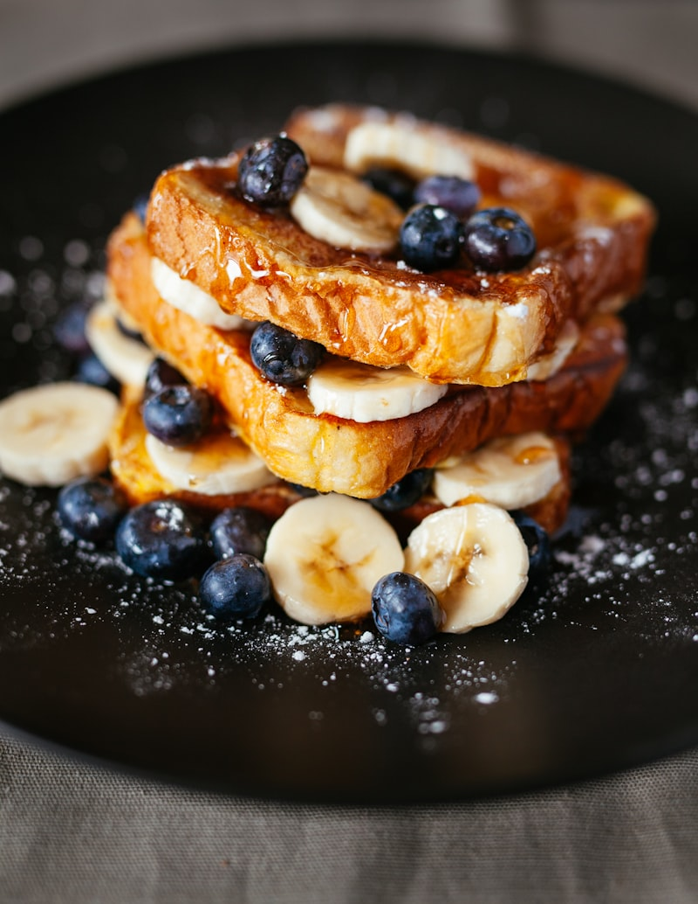

Nutrición Fitness para Mujeres 40+: Tu Cuerpo Merece Combustible de Calidad
Después de los 40, tu cuerpo cambia — pero eso no significa que debas conformarte. La caída natural de estrógeno y progesterona ralentiza tu metabolismo, reduce tu masa muscular y facilita la acumulación de grasa, especialmente en el abdomen. La buena noticia es que la alimentación correcta puede revertir todo esto.
El secreto está en un ciclo poderoso: la proteína construye músculo, el músculo quema grasa incluso en reposo, y la grasa que pierdes deja de interferir con tus hormonas. Es un efecto dominó a tu favor.
Cada kilogramo de músculo que ganas quema entre 50 y 100 calorías extra por día — sin que hagas nada. Pero para construir ese músculo, necesitas darle a tu cuerpo los nutrientes correctos: proteína de calidad en cada comida, carbohidratos inteligentes que no disparen tu insulina, y grasas buenas que nutran la producción de estrógeno y progesterona.
Estas 50 recetas fueron diseñadas específicamente para mujeres que quieren:
• Aumentar masa muscular de forma natural y saludable
• Mantener la sensibilidad a la insulina con alimentos que estabilizan la glucosa
• Nutrir el equilibrio hormonal con grasas saludables, fibra y micronutrientes
• Tener energía sostenida durante todo el día sin picos ni caídas
• Preparar comidas prácticas, rápidas y deliciosas
Cada receta incluye un consejo hormonal que te explica cómo ese plato trabaja a favor de tu metabolismo y tus hormonas. No estás haciendo dieta — estás alimentando tu transformación desde adentro.

Desayunos Proteicos Express
El desayuno marca el ritmo hormonal de todo tu día. Un desayuno alto en proteína estabiliza la glucosa desde la primera hora, evita los antojos de media mañana y le indica a tu cuerpo que es momento de construir músculo, no de almacenar grasa.
- 1 banana madura
- 2 huevos enteros
- 3 cucharadas de avena en hojuelas
- 1 cucharadita de canela en polvo
- 1 cucharadita de aceite de coco
- Fresas frescas para decorar
- Aplasta la banana con un tenedor hasta formar un puré suave.
- Agrega los huevos y bate bien hasta integrar completamente.
- Incorpora la avena en hojuelas y la canela, mezclando hasta obtener una masa homogénea.
- Calienta una sartén antiadherente con el aceite de coco a fuego medio.
- Vierte pequeñas porciones de la masa formando panqueques medianos.
- Cocina 2 minutos de cada lado hasta que estén dorados.
- Sirve con fresas frescas cortadas y una cucharada de pasta de maní natural.
- 4 claras de huevo
- 1 taza de espinaca fresca
- 1/4 de cebolla picada finamente
- 4 tomates cherry cortados por la mitad
- 1 cucharadita de aceite de oliva
- Sal rosa y pimienta al gusto
- Bate ligeramente las claras con sal rosa y pimienta negra.
- Calienta el aceite de oliva en una sartén antiadherente a fuego medio.
- Sofríe la cebolla por 1 minuto hasta que esté transparente.
- Agrega la espinaca y los tomates cherry, cocina 30 segundos más.
- Vierte las claras batidas por encima de los vegetales distribuyendo bien.
- Cocina a fuego bajo con la sartén tapada hasta que las claras cuajen completamente.
- Dobla la tortilla por la mitad y sirve caliente.
- 1/2 taza de avena en hojuelas
- 1 taza de leche descremada o vegetal
- 1 scoop de whey protein de vainilla
- 1 cucharadita de canela en polvo
- 1 cucharada de semillas de linaza molida
- Frutos rojos para decorar
- Calienta la leche en una olla pequeña a fuego medio.
- Agrega la avena y revuelve constantemente por 5 minutos hasta que espese.
- Retira del fuego y deja enfriar 2 minutos para no desnaturalizar la proteína.
- Incorpora el scoop de whey protein y mezcla vigorosamente hasta integrar.
- Agrega la canela y la linaza molida.
- Vierte en un tazón y decora con frutos rojos frescos.
- Sirve inmediatamente o deja enfriar y lleva al trabajo en un frasco.
- 3 cucharadas de goma de tapioca hidratada
- 2 rebanadas de pechuga de pavo
- 2 cucharadas de queso cottage
- Rodajas de tomate fresco
- Hojas de rúcula
- Sal y orégano al gusto
- Calienta una sartén antiadherente a fuego medio sin aceite.
- Esparce la goma de tapioca uniformemente formando un disco.
- Espera a que la masa se forme y quede consistente, aproximadamente 2 minutos.
- Voltea con cuidado y cocina 30 segundos más del otro lado.
- Agrega el queso cottage, las rebanadas de pavo, tomate y rúcula de un lado.
- Dobla la tapioca por la mitad presionando suavemente.
- Sirve inmediatamente mientras está caliente y crujiente.
- 1 envase de yogur griego natural sin azúcar (170g)
- 3 cucharadas de avena en hojuelas
- 2 cucharadas de nueces picadas
- 1 cucharada de coco rallado sin azúcar
- 1 cucharadita de miel de abeja pura
- Frutas frescas de temporada
- Mezcla la avena, las nueces picadas y el coco rallado en un tazón.
- Agrega la miel y revuelve hasta cubrir uniformemente todos los ingredientes.
- Esparce en una bandeja y hornea a 180°C por 10 minutos, revolviendo a la mitad.
- Deja que la granola se enfríe completamente para que quede crujiente.
- Coloca el yogur griego en la base de un frasco o tazón.
- Agrega capas de frutas frescas picadas y finaliza con la granola casera.
- Consume inmediatamente o tapa el frasco y lleva contigo.
- 1 taza de espinaca fresca
- 1 banana congelada
- 1/2 manzana verde con cáscara
- 1 cucharada de semillas de linaza
- 200ml de agua de coco natural
- Jugo de 1/2 limón
- Lava bien la espinaca y la manzana verde.
- Corta la manzana en trozos manteniendo la cáscara para aprovechar la fibra.
- Coloca la espinaca, banana congelada, manzana y linaza en la licuadora.
- Agrega el agua de coco y el jugo de limón.
- Bate a velocidad máxima por 2 minutos hasta que quede completamente homogéneo.
- Agrega más agua de coco si prefieres una consistencia menos espesa.
- Sirve inmediatamente bien frío para aprovechar todos los nutrientes.
- 3 huevos enteros
- 1/2 aguacate maduro
- 1 tortilla integral pequeña
- Hojas de lechuga fresca
- 1/2 tomate picado en cubos
- Sal y pimienta al gusto
- Bate los huevos con sal y pimienta en un tazón.
- Cocina los huevos revueltos en sartén antiadherente a fuego bajo, removiendo suavemente para que queden cremosos.
- Calienta la tortilla integral ligeramente en otra sartén o directamente en el fuego.
- Aplasta el aguacate con un tenedor y espárcelo sobre toda la tortilla.
- Coloca los huevos revueltos en el centro sobre el aguacate.
- Agrega las hojas de lechuga y el tomate picado.
- Enrolla bien apretado, corta por la mitad y sirve inmediatamente.
- 1 huevo entero
- 2 cucharadas de goma de tapioca hidratada
- 100g de pollo deshilachado sazonado
- 2 cucharadas de requesón light
- Cebollín fresco picado
- Sal y pimienta al gusto
- Bate el huevo en un tazón y mezcla con la goma de tapioca hasta integrar.
- Vierte la mezcla en una sartén antiadherente caliente formando un disco fino.
- Cocina a fuego medio hasta que los bordes comiencen a despegarse.
- Voltea con cuidado y cocina 30 segundos más del otro lado.
- Agrega el pollo deshilachado y el requesón sobre una mitad de la crepioca.
- Espolvorea cebollín fresco picado por encima.
- Dobla por la mitad, presiona suavemente y sirve caliente.

Smoothies y Bowls Energéticos
Los smoothies y bowls son aliados perfectos para días de entrenamiento. Aportan energía rápida, proteína y micronutrientes en un formato práctico que tu cuerpo absorbe fácilmente, ideal para antes o después del ejercicio.
- 1 paquete de pulpa de açaí sin azúcar (100g)
- 1 banana congelada en rodajas
- 1 scoop de whey protein de vainilla
- 50ml de leche de almendras sin azúcar
- 2 cucharadas de granola casera
- Frutas frescas para decorar
- Coloca la pulpa de açaí congelada, la banana y la leche de almendras en la licuadora.
- Agrega el scoop de whey protein a la mezcla.
- Bate a velocidad alta hasta obtener una textura cremosa y consistente, tipo helado.
- Vierte la mezcla en un bowl amplio.
- Decora con granola casera, rodajas de banana fresca y frutas de temporada.
- Agrega semillas de chía o coco rallado si deseas.
- Sirve inmediatamente antes de que se derrita.
- 1 taza de frutos rojos congelados (fresas, arándanos, frambuesas)
- 1 banana fresca
- 1 scoop de whey protein de fresa
- 200ml de leche descremada
- 1 cucharada de pasta de maní natural
- Hielo al gusto
- Coloca los frutos rojos congelados y la banana en la licuadora.
- Agrega la leche descremada y el scoop de whey protein.
- Incorpora la cucharada de pasta de maní natural.
- Bate a velocidad máxima por 2 minutos hasta que quede completamente homogéneo.
- Agrega hielo si deseas una textura más espesa y fría.
- Prueba y ajusta el dulce con stevia si es necesario.
- Sirve en un vaso grande inmediatamente.
- 1/2 taza de avena en hojuelas
- 1 taza de leche de almendras sin azúcar
- 1 cucharada de cacao en polvo 100% sin azúcar
- 1 cucharada de semillas de chía
- 1 cucharada de pasta de maní natural
- Stevia o miel al gusto
- En un frasco de vidrio, coloca la avena, el cacao en polvo y las semillas de chía.
- Vierte la leche de almendras y revuelve bien hasta integrar todos los ingredientes.
- Agrega la pasta de maní y endulza con stevia o miel al gusto.
- Tapa el frasco y lleva al refrigerador durante toda la noche (mínimo 6 horas).
- Por la mañana, revuelve y agrega más leche si la consistencia está muy espesa.
- Decora con rodajas de banana, frutos rojos o coco rallado.
- Consume frío directamente del frasco.
- 2 rebanadas de pan integral grueso
- 2 huevos enteros
- 1/4 taza de leche descremada
- 1 cucharadita de canela en polvo
- 1/2 cucharadita de esencia de vainilla
- Frutas frescas para acompañar
- Bate los huevos con la leche, la canela y la esencia de vainilla en un plato hondo.
- Sumerge cada rebanada de pan en la mezcla, dejando absorber 30 segundos por lado.
- Calienta una sartén antiadherente a fuego medio con un toque de aceite de coco.
- Cocina cada rebanada por 2-3 minutos de cada lado hasta que estén doradas.
- Retira y coloca en un plato.
- Decora con frutas frescas cortadas, un toque de canela y un hilo de miel.
- Sirve caliente inmediatamente.
- 1 taza de avena en hojuelas
- 2 huevos enteros
- 1 scoop de whey protein de vainilla
- 1/2 taza de leche descremada
- 1 cucharadita de polvo de hornear
- Frutas y pasta de maní para servir
- Coloca la avena, los huevos, el whey protein, la leche y el polvo de hornear en la licuadora.
- Bate por 1 minuto hasta obtener una masa homogénea y sin grumos.
- Deja reposar la masa por 5 minutos para que la avena se hidrate.
- Precalienta la máquina de waffles y engrasa ligeramente con aceite de coco.
- Vierte la masa y cierra la máquina, cocina hasta que estén dorados y crujientes.
- Retira con cuidado y sirve con frutas frescas y un toque de pasta de maní.
- Congela los waffles extras y recalienta en la tostadora cuando los necesites.

Snacks y Meriendas Inteligentes
Los snacks inteligentes mantienen tu metabolismo activo entre comidas principales. Comer cada 3-4 horas evita caídas de glucosa que disparan el cortisol — la hormona del estrés que ordena a tu cuerpo almacenar grasa abdominal.
- 1 lata de garbanzos escurridos (400g)
- 2 cucharadas de tahini (pasta de ajonjolí)
- Jugo de 1 limón
- 2 dientes de ajo
- 3 cucharadas de aceite de oliva extra virgen
- Palitos de zanahoria, pepino y apio para acompañar
- Escurre y enjuaga bien los garbanzos.
- Coloca los garbanzos, tahini, jugo de limón, ajo y aceite de oliva en el procesador.
- Procesa por 3-4 minutos hasta obtener una pasta cremosa y suave.
- Agrega 2-3 cucharadas de agua si necesitas una consistencia más ligera.
- Ajusta la sal y el limón al gusto.
- Sirve en un tazón con un chorrito de aceite de oliva y páprika por encima.
- Acompaña con palitos de zanahoria, pepino y apio frescos.
- 2 calabacines grandes y firmes
- 2 cucharadas de aceite de oliva
- 1/2 cucharadita de sal marina
- 1/2 cucharadita de páprika ahumada
- 1/2 cucharadita de ajo en polvo
- Orégano seco al gusto
- Precalienta el horno a 200°C y forra una bandeja con papel para hornear.
- Corta los calabacines en rebanadas finas y uniformes de 2-3mm de grosor.
- Coloca las rebanadas en un tazón y mezcla con aceite de oliva y todas las especias.
- Dispón las rebanadas en la bandeja en una sola capa, sin encimar.
- Hornea por 12-15 minutos, voltea cada rebanada con cuidado.
- Hornea 10-12 minutos más hasta que estén doradas y crujientes.
- Deja enfriar completamente en la bandeja — se vuelven más crujientes al enfriarse.
- 1 lata de atún en agua escurrido (170g)
- 1 huevo entero
- 2 cucharadas de avena en hojuelas
- 1/4 de cebolla picada finamente
- Perejil y cebollín frescos picados
- Sal, pimienta y ajo en polvo al gusto
- Escurre muy bien el atún y deshiláchalo con un tenedor en un tazón.
- Agrega el huevo, la avena en hojuelas y todos los condimentos.
- Incorpora la cebolla picada, el perejil y el cebollín, mezcla bien.
- Deja reposar la mezcla 5 minutos para que la avena absorba la humedad.
- Forma bolitas pequeñas del tamaño de una nuez con las manos húmedas.
- Coloca en bandeja forrada con papel para hornear y hornea a 180°C por 20 minutos.
- Voltea a la mitad del tiempo para dorar de ambos lados y sirve con salsa de yogur.
- 1 taza de nueces mixtas (almendras, nueces de castilla, marañones)
- 1 cucharada de aceite de oliva
- 1 cucharadita de miel de abeja
- 1/2 cucharadita de páprika ahumada
- 1 ramita de romero fresco picado
- Sal marina al gusto
- Precalienta el horno a 150°C.
- Mezcla las nueces con el aceite de oliva y la miel en un tazón.
- Agrega la páprika, el romero picado y la sal marina.
- Revuelve bien hasta que todas las nueces estén cubiertas uniformemente.
- Esparce en una bandeja forrada en una sola capa.
- Hornea por 15 minutos, revolviendo a la mitad del tiempo.
- Deja enfriar completamente y almacena en porciones de 30g en bolsitas.
- 200g de queso blanco firme (tipo panela o minas)
- 1 huevo batido
- 1/2 taza de harina de avena para empanar
- 1 cucharadita de orégano seco
- 1/2 cucharadita de ajo en polvo
- Sal al gusto
- Corta el queso en palitos de aproximadamente 1cm de grosor y 7cm de largo.
- Mezcla la harina de avena con el orégano, ajo en polvo y sal en un plato.
- Pasa cada palito de queso por el huevo batido cubriendo bien.
- Luego empana en la mezcla de harina de avena sazonada presionando suavemente.
- Dispón los palitos en una bandeja forrada con papel para hornear.
- Rocía un poco de aceite de oliva en spray por encima.
- Hornea a 200°C por 15 minutos hasta que estén dorados y crujientes.
- 1 huevo entero
- 2 cucharadas de almidón de yuca (tapioca)
- 2 cucharadas de queso blanco rallado
- 1 cucharadita de aceite de oliva
- Sal al gusto
- Orégano seco (opcional)
- En un tazón, mezcla el huevo, el almidón de yuca y el queso rallado.
- Agrega la sal y el orégano, revuelve hasta obtener una masa homogénea.
- Calienta una sartén pequeña antiadherente a fuego medio-bajo.
- Agrega el aceite de oliva y vierte la masa esparciendo uniformemente.
- Cocina tapado por 3 minutos hasta que la base esté firme y dorada.
- Voltea con cuidado y cocina 2 minutos más del otro lado.
- Sirve caliente directamente de la sartén.
- 3 bananas maduras
- 2 huevos enteros
- 1 taza de avena en hojuelas
- 1 cucharada de polvo de hornear
- 1 cucharada de canela en polvo
- 2 cucharadas de gotas de chocolate amargo 70%
- Precalienta el horno a 180°C y prepara un molde de muffins con capacillos.
- Aplasta las bananas con un tenedor y mezcla con los huevos batidos.
- Incorpora la avena en hojuelas, el polvo de hornear y la canela.
- Agrega las gotas de chocolate amargo y mezcla suavemente sin batir de más.
- Distribuye la masa en 8 moldes de muffin, llenando 3/4 de cada uno.
- Hornea por 20-22 minutos hasta que al insertar un palillo salga limpio.
- Deja enfriar 10 minutos antes de desmoldar y consume o congela para la semana.
- 1/2 taza de maíz para palomitas
- 1 cucharada de aceite de coco
- Sal marina fina
- 1/2 cucharadita de páprika ahumada
- 1/2 cucharadita de ajo en polvo
- 1 cucharada de levadura nutricional (opcional)
- Calienta el aceite de coco en una olla grande con tapa a fuego medio-alto.
- Agrega 3 granos de maíz y espera a que exploten para saber que el aceite está listo.
- Añade el resto del maíz, tapa la olla y sacude suavemente.
- Mantén a fuego medio hasta que las explosiones se espacien a 3 segundos entre sí.
- Retira del fuego y destapa con cuidado.
- Sazona inmediatamente con sal marina, páprika y ajo en polvo mientras están calientes.
- Agrega levadura nutricional si deseas un sabor similar al queso sin lácteos.

Almuerzos de Alto Rendimiento
El almuerzo es la comida donde debes concentrar la mayor parte de tus nutrientes. Un plato bien armado con proteína, carbohidrato complejo y vegetales le da a tu cuerpo todo lo que necesita para construir músculo, mantener energía y equilibrar tus hormonas.
- 150g de pechuga de pollo a la parrilla
- 1 taza de quinoa cocida
- 1/2 aguacate en rebanadas
- 6 tomates cherry cortados por la mitad
- Hojas verdes variadas (rúcula, espinaca)
- Jugo de 1/2 limón y aceite de oliva para aderezar
- Cocina la quinoa según las instrucciones del paquete y deja enfriar.
- Sazona la pechuga de pollo con sal, pimienta, ajo y páprika.
- Asa el pollo a la parrilla o sartén por 6 minutos de cada lado hasta dorarlo.
- Corta el pollo en rebanadas y prepara el aguacate.
- Monta el bowl con la quinoa en la base, luego las hojas verdes alrededor.
- Dispón las rebanadas de pollo, aguacate y tomates cherry.
- Rocía con aceite de oliva y jugo de limón, sazona con sal y pimienta.
- 1 corazón de lechuga romana
- 150g de pechuga de pollo a la parrilla
- 2 rebanadas de pan integral en cubos (crutones)
- 2 cucharadas de queso parmesano rallado
- Salsa: 3 cucharadas de yogur griego, 1 cucharadita de mostaza, jugo de limón y ajo
- Prepara la salsa mezclando el yogur griego con mostaza, jugo de limón y ajo picado.
- Sazona y asa la pechuga de pollo a la parrilla hasta dorar por ambos lados.
- Corta el pan integral en cubos pequeños y tuéstalos en el horno a 180°C por 8 minutos.
- Lava y corta la lechuga romana en trozos grandes.
- Corta el pollo en rebanadas sobre la lechuga.
- Agrega los crutones integrales y espolvorea el queso parmesano.
- Rocía con la salsa de yogur griego y sirve inmediatamente.
- 400g de pechuga de pollo en cubos
- 1 cebolla mediana picada
- 1 taza de champiñones fileteados
- 1 taza de yogur griego natural
- 2 cucharadas de salsa de tomate casera
- Sal, pimienta y nuez moscada al gusto
- Sazona los cubos de pollo con sal, pimienta y ajo en polvo.
- En una sartén grande, sofríe la cebolla con un poco de aceite de oliva.
- Agrega el pollo y dora por todos los lados a fuego alto por 5 minutos.
- Incorpora los champiñones fileteados y cocina por 3 minutos más.
- Baja el fuego, agrega la salsa de tomate y mezcla bien.
- Apaga el fuego completamente y entonces incorpora el yogur griego, revolviendo.
- Sirve con arroz integral o arroz de coliflor y espolvorea perejil fresco.
- 1 tortilla integral grande
- 100g de pollo deshilachado sazonado
- 3 cucharadas de hummus casero
- Hojas de lechuga y rúcula
- Zanahoria rallada
- 1/2 tomate picado
- Calienta ligeramente la tortilla integral en una sartén o directo en el fuego.
- Esparce el hummus cubriendo toda la superficie de la tortilla.
- Distribuye las hojas de lechuga y rúcula sobre el hummus.
- Coloca el pollo deshilachado en el centro en una línea.
- Agrega la zanahoria rallada y el tomate picado.
- Enrolla la tortilla bien apretada, doblando primero los lados.
- Corta por la mitad en diagonal y sirve o envuelve para llevar.
- 2 rebanadas de pan integral
- 100g de pechuga de pollo deshilachada
- 2 cucharadas de requesón light
- Lechuga, tomate y zanahoria rallada
- 1 cucharadita de mostaza
- Sal y pimienta al gusto
- Sazona el pollo deshilachado con mostaza, sal y pimienta, mezcla bien.
- Esparce el requesón light sobre una rebanada de pan integral.
- Coloca una capa de lechuga fresca como base sobre el requesón.
- Agrega el pollo deshilachado sazonado sobre la lechuga.
- Distribuye el tomate en rodajas y la zanahoria rallada encima.
- Cierra el sándwich con la otra rebanada de pan.
- Corta por la mitad en diagonal y sirve o envuelve en papel film para llevar.
- 1 filete de salmón fresco (150g)
- 1 batata (camote) mediana
- 2 tazas de mix de hojas verdes
- 1 taza de brócoli al vapor
- 2 cucharadas de semillas de girasol
- Aderezo: aceite de oliva, limón y sal
- Pela y corta la batata en cubos, hornea a 200°C por 25 minutos hasta dorar.
- Sazona el salmón con sal, pimienta y jugo de limón.
- Asa el salmón en sartén caliente por 4 minutos de cada lado, dejando el centro jugoso.
- Cocina el brócoli al vapor por 5 minutos hasta que esté tierno pero firme.
- Monta la ensalada con las hojas verdes como base en un plato amplio.
- Dispón la batata, el brócoli y el salmón desmenuzado encima.
- Espolvorea las semillas de girasol y rocía con aceite de oliva y limón.
- 1 filete de atún fresco (200g)
- 3 cucharadas de ajonjolí (blanco y negro)
- 2 cucharadas de salsa de soya baja en sodio
- 1 cucharadita de jengibre fresco rallado
- Mix de hojas verdes para acompañar
- 1 cucharadita de aceite de ajonjolí
- Marina el filete de atún con salsa de soya, jengibre rallado y aceite de ajonjolí por 10 minutos.
- Esparce el ajonjolí en un plato y presiona el filete por todos los lados para cubrirlo.
- Calienta una sartén de hierro a fuego muy alto hasta que humee ligeramente.
- Sella el atún por 30-40 segundos de cada lado sin moverlo.
- El centro debe quedar rosado y jugoso — no lo cocines de más.
- Corta en rebanadas de 1cm de grosor con un cuchillo afilado.
- Sirve sobre un colchón de hojas verdes con rodajas de pepino y aguacate.
- 6 huevos enteros
- 1 calabacín rallado
- 1 zanahoria rallada
- 1/2 taza de brócoli picado finamente
- 1/3 taza de queso light rallado
- Sal, pimienta y hierbas frescas al gusto
- Precalienta el horno a 180°C y engrasa un molde refractario.
- Bate los huevos en un tazón grande con sal, pimienta y hierbas.
- Exprime el calabacín rallado para retirar el exceso de agua.
- Incorpora el calabacín, la zanahoria, el brócoli y el queso a los huevos batidos.
- Vierte la mezcla en el molde refractario distribuyendo los vegetales uniformemente.
- Hornea por 25-30 minutos hasta que esté firme y dorada por encima.
- Deja enfriar 5 minutos, corta en porciones y sirve con ensalada verde.

Cenas Ligeras y Reconfortantes
La cena es clave para la recuperación nocturna. Tu cuerpo repara músculos y equilibra hormonas mientras duermes. Una cena ligera pero nutritiva favorece la producción de hormona del crecimiento, que quema grasa y regenera tejidos durante la noche.
- 1 coliflor grande procesada en granos finos
- 200g de pechuga de pollo en cubos pequeños
- 1 cebolla mediana picada finamente
- 2 dientes de ajo picados
- 1/2 taza de caldo de vegetales bajo en sodio
- 2 cucharadas de queso parmesano rallado
- Procesa la coliflor en el procesador hasta que quede con textura de arroz.
- Sofríe la cebolla y el ajo con aceite de oliva hasta que estén transparentes.
- Agrega los cubos de pollo sazonados y dora por todos los lados.
- Incorpora la coliflor procesada y revuelve bien.
- Agrega el caldo de vegetales poco a poco, revolviendo como si fuera risotto.
- Cocina por 8-10 minutos hasta que la coliflor esté tierna pero no blanda.
- Finaliza con queso parmesano, pimienta negra y perejil fresco.
- 1 taza de lentejas lavadas
- 2 zanahorias picadas en cubos
- 2 papas medianas peladas y picadas
- 1 cebolla y 2 dientes de ajo picados
- 1 litro de caldo de vegetales
- Comino, cúrcuma y sal al gusto
- Sofríe la cebolla y el ajo en una olla grande con aceite de oliva.
- Agrega la zanahoria y la papa, sofríe por 3 minutos más.
- Incorpora las lentejas lavadas y el caldo de vegetales.
- Sazona con comino, cúrcuma, sal y pimienta.
- Lleva a ebullición y luego baja a fuego medio-bajo.
- Cocina tapado por 25-30 minutos hasta que las lentejas estén tiernas.
- Sirve bien caliente con un chorrito de aceite de oliva y perejil fresco.
- 400g de pollo deshilachado sazonado
- 1 coliflor grande cocida y escurrida
- 200ml de leche descremada
- 1/2 taza de salsa de tomate casera
- 1/3 taza de queso light rallado para gratinar
- Sal, pimienta y nuez moscada al gusto
- Cocina y deshilacha el pollo sazonado con ajo, cebolla y sal.
- Cocina la coliflor al vapor y aplástala con la leche hasta formar un puré cremoso.
- Sazona el puré con sal, pimienta y una pizca de nuez moscada.
- En un refractario, coloca una capa de pollo deshilachado con salsa de tomate.
- Cubre completamente con el puré de coliflor alisando la superficie.
- Espolvorea el queso rallado por encima.
- Hornea a 180°C por 20 minutos hasta que el queso esté dorado y burbujeante.
- 2 berenjenas grandes
- 300g de carne molida magra de res o pollo
- 1 cebolla mediana y 2 tomates picados
- 1/2 pimiento rojo picado
- 1/3 taza de queso light rallado para gratinar
- Sal, pimienta, orégano y ajo en polvo
- Corta las berenjenas por la mitad a lo largo y retira la pulpa con una cuchara dejando la cáscara intacta.
- Sofríe la cebolla, el ajo y el pimiento con aceite de oliva por 3 minutos.
- Agrega la carne molida y cocina deshaciendo los grumos hasta dorar completamente.
- Pica la pulpa de berenjena y agrégala al sofrito con los tomates.
- Sazona con sal, pimienta y orégano, cocina 5 minutos más.
- Rellena las cáscaras de berenjena con la mezcla y cubre con queso rallado.
- Hornea a 180°C por 30-35 minutos hasta que la berenjena esté tierna y el queso dorado.
- 2 filetes de tilapia frescos
- Jugo de 1 limón
- 8 tomates cherry cortados por la mitad
- Hierbas frescas (tomillo y romero)
- 2 cucharadas de aceite de oliva
- 3 dientes de ajo laminados
- Precalienta el horno a 200°C.
- Sazona los filetes de tilapia con jugo de limón, sal y pimienta por ambos lados.
- Coloca los filetes en un refractario engrasado.
- Distribuye los tomates cherry, las hierbas frescas y el ajo laminado alrededor.
- Rocía todo con aceite de oliva.
- Hornea por 18-20 minutos hasta que el pescado se deshaga fácilmente con un tenedor.
- Sirve directamente del refractario acompañado de vegetales al vapor o ensalada.
- 500g de carne molida de pavo
- 1 cebolla pequeña rallada
- 2 cucharadas de avena en hojuelas
- 1 huevo entero
- 1 cucharadita de ajo en polvo
- Sal y pimienta negra al gusto
- Mezcla la carne molida de pavo con la cebolla rallada, el huevo y la avena.
- Sazona con ajo en polvo, sal y pimienta negra, mezcla con las manos.
- Deja reposar la mezcla en el refrigerador por 15 minutos para que la avena absorba.
- Divide la mezcla en 4 porciones iguales y moldea hamburguesas de 1.5cm de grosor.
- Asa en la parrilla o sartén caliente por 5-6 minutos de cada lado sin presionar.
- Monta en pan integral con lechuga, tomate, mostaza y aguacate.
- Congela las hamburguesas crudas sobrantes individualmente para tener siempre a mano.

Preparaciones para la Semana
El meal prep es tu mejor estrategia para no caer en opciones rápidas y poco saludables. Dedicar unas horas del fin de semana a preparar comidas te asegura que siempre tendrás opciones nutritivas listas, sin excusas ni improvisaciones que saboteen tu progreso.
- 8 huevos enteros
- 1 taza de brócoli picado finamente
- 1 calabacín rallado y exprimido
- 1/2 taza de queso cottage
- 8 tomates cherry cortados por la mitad
- Sal, pimienta y hierbas secas al gusto
- Precalienta el horno a 180°C y engrasa un molde refractario rectangular.
- Bate los huevos con el queso cottage, sal, pimienta y hierbas.
- Incorpora el brócoli picado y el calabacín rallado bien exprimido.
- Vierte la mezcla en el refractario distribuyendo los vegetales uniformemente.
- Coloca los tomates cherry por encima presionándolos ligeramente.
- Hornea por 30 minutos hasta que esté firme, dorada y cuajada en el centro.
- Deja enfriar, corta en 6 porciones iguales y almacena en recipientes individuales.
- 4 huevos enteros
- 1 taza de espinaca fresca picada
- 1/2 taza de queso cottage
- 1/4 taza de harina de avena
- 6 tomates cherry
- Sal, pimienta y nuez moscada al gusto
- Precalienta el horno a 180°C y engrasa un molde de muffins o usa capacillos de silicona.
- Bate los huevos con el queso cottage en un tazón hasta integrar bien.
- Agrega la espinaca picada, la harina de avena y los condimentos.
- Mezcla bien hasta obtener una masa homogénea.
- Distribuye la mezcla en 6 moldes de muffin, llenando hasta 3/4 de cada uno.
- Coloca un tomate cherry en la parte superior de cada muffin presionando levemente.
- Hornea por 20-22 minutos hasta que estén dorados y firmes al tacto.
- 1/2 aguacate maduro
- 1 banana congelada
- 1 taza de espinaca fresca
- 100ml de leche de coco sin azúcar
- 1 cucharada de semillas de chía
- Granola casera y frutas para decorar
- Coloca el aguacate, la banana congelada y la espinaca en la licuadora.
- Agrega la leche de coco y bate hasta obtener una crema espesa y suave.
- Si queda muy espeso, agrega un poco más de leche, una cucharada a la vez.
- Vierte en un bowl amplio.
- Espolvorea las semillas de chía por encima.
- Decora con granola casera, rodajas de banana fresca y frutos rojos.
- Consume inmediatamente para mantener la textura cremosa.
- 4 hojas grandes de lechuga americana firmes
- 1 lata de atún en agua escurrido (170g)
- 1 tomate mediano picado en cubos
- 1/2 aguacate en cubos
- Jugo de 1/2 limón
- Sal, pimienta y cilantro fresco picado
- Lava y seca cuidadosamente las hojas de lechuga, manteniéndolas enteras.
- Escurre el atún y colócalo en un tazón, deshiláchalo con un tenedor.
- Agrega el tomate picado, el cilantro y sazona con sal y pimienta.
- Aplasta el aguacate con limón y sal en otro tazón pequeño.
- Coloca una cucharada de aguacate sobre cada hoja de lechuga.
- Agrega la mezcla de atún sazonado sobre el aguacate.
- Enrolla cada hoja como un wrap, fija con un palillo y sirve fresco.
- 1 taza de espinaca fresca
- 2 huevos enteros
- 3 cucharadas de avena en hojuelas
- 2 cucharadas de queso cottage
- 1/2 tomate picado y albahaca fresca
- Sal y pimienta al gusto
- Coloca la espinaca, los huevos y la avena en la licuadora y bate hasta que quede verde y homogéneo.
- Calienta una sartén antiadherente a fuego medio con un toque de aceite.
- Vierte porciones de la masa formando panqueques finos y redondos.
- Cocina 2 minutos de cada lado hasta que estén firmes y ligeramente dorados.
- Prepara el relleno mezclando el cottage con el tomate picado y la albahaca.
- Rellena cada panqueque con la mezcla, enrolla como una crepé.
- Dispón en un refractario y recalienta en el horno si deseas servir caliente.

Postres y Dulces Fit
Comer saludable no significa renunciar al placer. Estos postres satisfacen tu antojo dulce sin disparar la insulina ni sabotear tu progreso. Están diseñados con ingredientes naturales que nutren en lugar de inflamar, para que disfrutes sin culpa.
- 1 aguacate maduro
- 2 cucharadas de cacao en polvo 100% sin azúcar
- 1 scoop de whey protein de chocolate
- 2 cucharadas de miel de abeja pura
- 1/2 taza de leche descremada
- Frutos rojos para decorar
- Corta el aguacate por la mitad y retira la pulpa con una cuchara.
- Coloca el aguacate, el cacao, el whey protein y la miel en el procesador.
- Agrega la leche descremada y procesa por 2-3 minutos hasta que quede cremoso.
- Prueba y ajusta el dulce con más miel si es necesario.
- Distribuye la mousse en 3-4 frasquitos o copas individuales.
- Lleva al refrigerador por mínimo 2 horas hasta que esté firme y fría.
- Decora con frutos rojos frescos y una pizca de cacao antes de servir.
- 1 taza de frijol negro cocido y escurrido
- 2 huevos enteros
- 3 cucharadas de cacao en polvo 100%
- 1/4 taza de miel de abeja pura
- 1 cucharadita de polvo de hornear
- 2 cucharadas de gotas de chocolate amargo 70%
- Precalienta el horno a 180°C y engrasa un molde cuadrado pequeño.
- Coloca el frijol negro cocido en el procesador y bate hasta formar una pasta suave.
- Agrega los huevos, el cacao en polvo y la miel, procesa hasta integrar.
- Incorpora el polvo de hornear y mezcla brevemente.
- Agrega las gotas de chocolate amargo y revuelve con una espátula.
- Vierte la masa en el molde y distribuye uniformemente.
- Hornea por 20-22 minutos hasta que al insertar un palillo salga con migajas húmedas.
- 2 tazas de avena en hojuelas
- 1/2 taza de nueces mixtas picadas
- 1/4 taza de miel de abeja pura
- 1/4 taza de pasta de maní natural
- 2 cucharadas de semillas de chía
- 1 cucharadita de canela en polvo
- En un tazón grande, mezcla la avena, las nueces picadas, la chía y la canela.
- En una olla pequeña, calienta la miel y la pasta de maní a fuego bajo hasta que se derritan y combinen.
- Vierte la mezcla líquida sobre los ingredientes secos y revuelve bien.
- Presiona firmemente la mezcla en un molde rectangular forrado con papel encerado.
- Asegúrate de que quede bien compacta presionando con una cuchara o las manos.
- Lleva al refrigerador por mínimo 2 horas hasta que esté firme.
- Corta en 8-10 barras, envuelve individualmente y almacena en el refrigerador hasta 2 semanas.
- 4 rebanadas de pechuga de pavo
- 4 cucharadas de queso crema light
- Palitos de zanahoria delgados
- Palitos de pepino delgados
- Hojas de rúcula fresca
- Mostaza al gusto
- Extiende las rebanadas de pechuga de pavo sobre una superficie limpia.
- Esparce una cucharada de queso crema light sobre cada rebanada.
- Agrega una línea fina de mostaza sobre el queso crema.
- Coloca 2-3 hojas de rúcula y palitos de zanahoria y pepino en un extremo.
- Enrolla cada rebanada bien apretada desde el extremo con los vegetales.
- Corta cada rollito por la mitad en diagonal para presentar.
- Fija con un palillo decorativo si es necesario y sirve fríos.
- 1 taza de avena en hojuelas
- 1/2 taza de pasta de maní natural
- 3 cucharadas de cacao en polvo 100%
- 2 cucharadas de miel de abeja pura
- 2 cucharadas de semillas de chía
- 1/4 taza de coco rallado sin azúcar para cubrir
- En un tazón, mezcla la avena, la pasta de maní, el cacao en polvo y la miel.
- Agrega las semillas de chía y revuelve hasta obtener una masa firme y homogénea.
- Si la mezcla está muy seca, agrega una cucharada más de miel.
- Con las manos ligeramente húmedas, forma bolitas del tamaño de una nuez grande.
- Rueda cada bolita sobre el coco rallado para cubrirla completamente.
- Coloca las bolitas en un recipiente forrado con papel encerado.
- Refrigera por 1 hora mínimo antes de consumir y almacena hasta 2 semanas en el refrigerador.
- 150g de pechuga de pollo a la plancha, cortada en cubos
- 1/2 taza de garbanzos cocidos y escurridos
- 1 taza de espinaca fresca
- 1/2 aguacate en rebanadas
- 1/4 taza de tomate cherry cortado por la mitad
- 2 cucharadas de yogur griego natural
- Jugo de 1/2 limón
- 1 cucharadita de aceite de oliva extra virgen
- Sal, pimienta y comino al gusto
- Cocina la pechuga de pollo a la plancha con sal y pimienta hasta que esté dorada por ambos lados y córtala en cubos medianos.
- En un bowl amplio, coloca la espinaca fresca como base.
- Agrega los garbanzos escurridos, los cubos de pollo, el tomate cherry y las rebanadas de aguacate.
- Mezcla el yogur griego con el jugo de limón, el aceite de oliva y una pizca de comino para crear un aderezo cremoso.
- Vierte el aderezo sobre el bowl y mezcla suavemente.
- Sirve de inmediato para disfrutar las texturas crujientes y cremosas juntas.
- 5 claras de huevo
- 1 taza de espinaca fresca picada
- 1/2 taza de champiñones frescos rebanados
- 1/4 de cebolla picada finamente
- 1 cucharadita de aceite de oliva
- Sal, pimienta y una pizca de cúrcuma
- 1 cucharada de queso parmesano rallado (opcional)
- Calienta el aceite de oliva en una sartén antiadherente a fuego medio.
- Saltea la cebolla y los champiñones durante 3 minutos hasta que estén dorados y suelten su aroma.
- Agrega la espinaca y cocina por 1 minuto hasta que se reduzca ligeramente.
- Bate las claras de huevo con sal, pimienta y cúrcuma hasta que estén espumosas.
- Vierte las claras sobre los vegetales salteados y distribuye uniformemente en la sartén.
- Cocina a fuego medio-bajo durante 3-4 minutos sin mover, hasta que la base esté firme.
- Dobla la tortilla por la mitad con cuidado, espolvorea con parmesano y sirve caliente.
- 180g de filete de res magro
- 2 tazas de brócoli fresco cortado en floretes
- 1 diente de ajo picado finamente
- 1 cucharada de salsa de soya baja en sodio
- 1 cucharadita de aceite de ajonjolí
- Jugo de 1/2 limón
- Sal, pimienta negra y hojuelas de chile seco al gusto
- 1 cucharadita de semillas de ajonjolí para decorar
- Sazona el filete con sal y pimienta y déjalo reposar 10 minutos a temperatura ambiente.
- Cocina el brócoli al vapor durante 4-5 minutos hasta que esté tierno pero crujiente, sin que pierda su color verde intenso.
- En una sartén bien caliente, sella el filete por ambos lados: 3 minutos por lado para término medio.
- Retira el filete de la sartén y déjalo reposar 3 minutos antes de cortarlo en láminas delgadas.
- Mezcla la salsa de soya con el aceite de ajonjolí, el ajo picado y el jugo de limón para crear un aderezo oriental.
- Sirve las láminas de filete junto al brócoli al vapor, baña con el aderezo y espolvorea semillas de ajonjolí.
- 1 tortilla integral grande
- 100g de pechuga de pavo en rebanadas
- 3 cucharadas de hummus casero o natural
- 1/4 pepino en bastones finos
- 1/4 pimiento rojo en tiras
- Hojas de lechuga o espinaca fresca
- 1 cucharadita de semillas de girasol
- Sal y pimienta al gusto
- Calienta la tortilla integral ligeramente en una sartén seca para que sea más flexible.
- Esparce el hummus de manera uniforme sobre toda la superficie de la tortilla.
- Coloca las rebanadas de pavo cubriendo el centro de la tortilla.
- Agrega las hojas de lechuga o espinaca, los bastones de pepino y las tiras de pimiento.
- Espolvorea las semillas de girasol sobre los vegetales.
- Enrolla la tortilla bien apretada, doblando primero los extremos y luego enrollando desde abajo.
- Corta el wrap por la mitad en diagonal y sirve de inmediato o envuelve en papel aluminio para llevar.
- 1 taza de leche de almendras sin azúcar
- 1 medida de proteína en polvo sabor vainilla o chocolate
- 1 cucharada de mantequilla de maní natural sin azúcar
- 1/2 plátano maduro congelado
- 1 cucharada de avena en hojuelas
- 1/2 cucharadita de canela en polvo
- 4-5 cubos de hielo
- Agrega la leche de almendras al vaso de la licuadora como base líquida.
- Incorpora el plátano congelado, la mantequilla de maní y la avena.
- Añade la proteína en polvo y la canela.
- Agrega los cubos de hielo para obtener una consistencia espesa y fría.
- Licúa a máxima velocidad durante 45-60 segundos hasta que la mezcla sea completamente homogénea y cremosa.
- Sirve de inmediato en un vaso grande y disfruta como desayuno completo o snack post-entrenamiento.